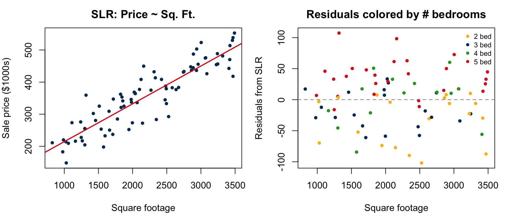

PSTAT 126: Linear Regression
UC Santa Barbara
2026-11-03
By the end of today you will be able to:
(a) (3 pts) A student proposes minimizing \(\sum_{i=1}^n e_i\) instead of \(\sum_{i=1}^n e_i^2\). Explain why this fails.
Positive and negative residuals cancel. There are infinitely many lines that achieve \(\sum e_i = 0\) (including terrible fits). In fact, \(\sum e_i = 0\) always holds for OLS, so this criterion places no constraint on the line. Squaring the residuals prevents cancellation and penalizes large errors more heavily.
(b) (2 pts) The Gauss-Markov theorem says OLS is BLUE. What does this mean?
BLUE = Best Linear Unbiased Estimator. Among all estimators that are (1) linear functions of \(Y_1, \ldots, Y_n\) and (2) unbiased for \(\beta_1\), OLS has the smallest variance (minimum variance).
Q2. (2 pts) Under \(\varepsilon_i \overset{iid}{\sim} N(0, \sigma^2)\), what does the normality assumption enable that OLS alone cannot?
The normality assumption gives \(\hat{\beta}_0\) and \(\hat{\beta}_1\) exact sampling distributions (\(t\)- and \(F\)-distributions), making exact hypothesis tests and confidence/prediction intervals possible. OLS alone guarantees unbiasedness and minimum variance (Gauss-Markov) but provides no distributional results.
Q3(a). (2 pts) State the exact sampling distribution of \(\hat{\beta}_1\).
\[\hat{\beta}_1 \sim N\!\left(\beta_1,\; \frac{\sigma^2}{S_{xx}}\right) \qquad \text{Mean: } \beta_1 \qquad \text{Variance: } \frac{\sigma^2}{S_{xx}}\]
Q3(b). (3 pts) Why do we use MSE instead of \(\sigma^2\) when constructing test statistics and CIs for \(\hat{\beta}_1\)?
\(\sigma^2\) is an unknown population parameter. We replace it with \(\text{MSE} = \text{RSS}/(n-2)\), the unbiased estimator of \(\sigma^2\).
(a) (1 pt) A researcher wants to estimate the average sleep quality score for all students who spend 7 hours per day on screens. CI or PI?
Confidence interval for \(E(Y^*)\). The researcher is estimating the mean response for a population of students at that screen time, not any individual student’s score.
(b) (2 pts) Write the 95% CI and PI formulas side by side and identify the term that makes the PI wider.
\[\textbf{CI:}\quad \hat{y}^* \pm t_{0.025,\,n-2}\;\hat{\sigma}\sqrt{\frac{1}{n} + \frac{(x^*-\bar{x})^2}{S_{xx}}}\]
\[\textbf{PI:}\quad \hat{y}^* \pm t_{0.025,\,n-2}\;\hat{\sigma}\sqrt{\boxed{1} + \frac{1}{n} + \frac{(x^*-\bar{x})^2}{S_{xx}}}\]
The extra \(\mathbf{1}\) under the square root in the PI accounts for the variability of a single new observation around the true mean, making the PI always wider than the CI.
For each residual plot description, identify the violated assumption and suggest a remedial measure.
(a) (2 pts) Residuals vs. \(\hat{Y}\) shows a fan shape (spread increases as \(\hat{Y}\) increases).
(b) (2 pts) Residuals vs. \(X\) shows a systematic increasing trend (negative at low \(X\), positive at high \(X\)).
A researcher studies daily screen time (\(x\), hrs/day) and sleep quality (\(y\), out of 100) for \(n = 6\) students.
\(\bar{x} = 7,\quad \bar{y} = 70,\quad S_{xx} = 70,\quad S_{xy} = -210,\quad R^2 = 0.946,\quad t_{0.025,\,4} = 2.776\)
Q6. (2 pts) Compute \(\hat{\beta}_1\) and \(\hat{\beta}_0\).
\[\hat{\beta}_1 = \frac{S_{xy}}{S_{xx}} = \frac{-210}{70} = -3 \qquad \hat{\beta}_0 = \bar{y} - \hat{\beta}_1\bar{x} = 70 - (-3)(7) = 70 + 21 = 91\]
Q7. (2 pts) Write the fitted equation and interpret \(\hat{\beta}_1\) in context.
\[\hat{y} = 91 - 3x\]
For each additional hour of daily screen time, sleep quality score decreases by 3 points on average.
Using \(\hat{y} = 91 - 3x\), complete the table and verify \(\displaystyle\sum_{i=1}^6 e_i = 0\).
| \(i\) | 1 | 2 | 3 | 4 | 5 | 6 |
|---|---|---|---|---|---|---|
| \(x_i\) | 2 | 4 | 6 | 8 | 10 | 12 |
| \(y_i\) | 88 | 76 | 70 | 70 | 61 | 55 |
| \(\hat{y}_i\) | ||||||
| \(e_i\) |
| \(i\) | 1 | 2 | 3 | 4 | 5 | 6 |
|---|---|---|---|---|---|---|
| \(x_i\) | 2 | 4 | 6 | 8 | 10 | 12 |
| \(y_i\) | 88 | 76 | 70 | 70 | 61 | 55 |
| \(\hat{y}_i\) | 85 | 79 | 73 | 67 | 61 | 55 |
| \(e_i\) | 3 | −3 | −3 | 3 | 0 | 0 |
Verify: \(\displaystyle\sum_{i=1}^6 e_i = 3 + (-3) + (-3) + 3 + 0 + 0 = 0\) ✓
Q9. (3 pts) Compute RSS, \(\hat{\sigma}^2\), and \(\hat{\sigma}\). Interpret \(\hat{\sigma}\) in context.
\[\text{RSS} = \sum e_i^2 = 9 + 9 + 9 + 9 + 0 + 0 = 36 \qquad \hat{\sigma}^2 = \text{MSE} = \frac{\text{RSS}}{n-2} = \frac{36}{4} = 9 \qquad \hat{\sigma} = 3\]
The typical deviation of an observed sleep quality score from its fitted value is about 3 points.
Q10. (4 pts) Test \(H_0\colon \beta_1 = 0\) vs. \(H_a\colon \beta_1 \neq 0\) at \(\alpha = 0.05\).
\[\widehat{SE}(\hat{\beta}_1) = \sqrt{\frac{\text{MSE}}{S_{xx}}} = \sqrt{\frac{9}{70}} = \frac{3}{\sqrt{70}} \approx 0.3586 \qquad t^* = \frac{\hat{\beta}_1}{\widehat{SE}(\hat{\beta}_1)} = \frac{-3}{0.3586} \approx -8.37\]
Since \(|t^*| = 8.37 > t_{0.025,\,4} = 2.776\), we reject \(H_0\) at \(\alpha = 0.05\). There is sufficient evidence that daily screen time is a statistically significant linear predictor of sleep quality score.
Q11. (3 pts) Construct a 95% CI for \(\beta_1\) and interpret it in context.
\[\hat{\beta}_1 \pm t_{0.025,\,4}\;\widehat{SE}(\hat{\beta}_1) = -3 \pm 2.776(0.3586) = -3 \pm 0.996 \approx \mathbf{(-3.996,\; -2.004)}\]
We are 95% confident that for each additional hour of daily screen time, mean sleep quality score decreases by between 2.0 and 4.0 points.
Q12. (2 pts) Interpret \(R^2 = 0.946\) in context.
Approximately 94.6% of the variability in sleep quality scores is explained by the linear relationship with daily screen time.
(5 pts) Complete the ANOVA table. Use your computed values for RSS and the identity \(\text{SST} = \text{SSR} + \text{SSE}\).
| Source | df | SS | MS | \(F^*\) |
|---|---|---|---|---|
| Model | ||||
| Error | ||||
| Total |
Using \(F(0.95;\,1,\,4) = 7.71\), do you reject \(H_0\colon \beta_1 = 0\) at \(\alpha = 0.05\)? Also verify that \(F^* = (t^*)^2\) (up to rounding).
\[\text{SSR} = \hat{\beta}_1 S_{xy} = (-3)(-210) = 630 \qquad \text{SSE} = \text{RSS} = 36 \qquad \text{SST} = 630 + 36 = 666\]
| Source | df | SS | MS | \(F^*\) |
|---|---|---|---|---|
| Model | 1 | 630 | 630 | 70 |
| Error | 4 | 36 | 9 | |
| Total | 5 | 666 |
Since \(F^* = 70 > F(0.95;\,1,\,4) = 7.71\), we reject \(H_0\) at \(\alpha = 0.05\).
Verify: \((t^*)^2 = (-8.37)^2 \approx 70.06 \approx 70 = F^*\) ✓
CO\(_2\) emissions (\(Y\), ppm) on engine displacement (\(X\), liters), \(n = 40\). Residuals-vs-fitted shows a strong fan shape; QQ-plot shows a pronounced right skew.
(a) (1 pt) Which two SLR assumptions appear violated?
(b) (2 pts) A Box-Cox analysis yields \(\hat{\lambda} \approx 0.5\), with a 95% CI that excludes \(\lambda = 1\). What transformation does this suggest?
\(\hat{\lambda} \approx 0.5\) suggests the square root transformation: \(Y' = \sqrt{Y}\). Because the 95% CI for \(\lambda\) excludes \(\lambda = 1\) (no transformation), there is statistical evidence that the transformation is necessary to stabilize variance and improve normality.
So far, we have modeled one response variable using one predictor:
\[Y_i = \beta_0 + \beta_1 X_i + \epsilon_i\]
With it, we can estimate slopes, run \(t\)-tests, build prediction intervals, and diagnose model fit.
But it rests on a strong implicit assumption: one variable is enough to explain \(Y\).
In practice, that assumption rarely holds.
Suppose we want to predict the sale price of a house (\(Y\), in $1000s).
We start with SLR using square footage alone:

The residual plot shows a clear pattern: houses with more bedrooms tend to have positive residuals even after accounting for size. Square footage alone is leaving out important information.
Consider two houses with identical square footage:
| House | Sq. Ft. | Bedrooms | Age (yrs) | Actual Price |
|---|---|---|---|---|
| A | 2000 | 2 | 30 | $280k |
| B | 2000 | 5 | 5 | $410k |
Our SLR model is \(\widehat{\text{Price}}_i = \widehat{\beta}_0 + \widehat{\beta}_1 \cdot \text{SqFt}_i\).
Since both houses have \(\text{SqFt} = 2000\), SLR produces the same prediction for both:
\[\widehat{\text{Price}}_A = \widehat{\text{Price}}_B = \widehat{\beta}_0 + \widehat{\beta}_1 \cdot 2000\]
The $130k gap is completely invisible to the model.
Multiple regression lets us include all three predictors at once:
\[\text{Price}_i = \beta_0 + \beta_1 \cdot \text{SqFt}_i + \beta_2 \cdot \text{Bedrooms}_i + \beta_3 \cdot \text{Age}_i + \epsilon_i\]
Now the model can distinguish House A and House B and estimate the effect of each variable while holding the others constant.
What does “holding others constant” mean?
\(\beta_2\) is the expected change in price for each additional bedroom, among houses of the same size and age. We’re isolating the effect of bedrooms by comparing only houses that are alike in every other way.
In most real applications, a response variable depends on more than one predictor.
Examples:
Even when we care about only one predictor’s effect, we often need to control (adjust) for other variables to get an accurate estimate.
The goals of multiple regression are to:
Suppose we have \(n\) observations on response \(Y\) and \(p - 1\) independent variables \(X_1, \ldots, X_{p-1}\):
| Observation | \(Y\) | \(X_1\) | \(X_2\) | \(\cdots\) | \(X_{p-1}\) |
|---|---|---|---|---|---|
| 1 | \(Y_1\) | \(X_{11}\) | \(X_{12}\) | \(\cdots\) | \(X_{1,p-1}\) |
| 2 | \(Y_2\) | \(X_{21}\) | \(X_{22}\) | \(\cdots\) | \(X_{2,p-1}\) |
| \(\vdots\) | \(\vdots\) | \(\vdots\) | \(\vdots\) | \(\vdots\) | \(\vdots\) |
| \(n\) | \(Y_n\) | \(X_{n1}\) | \(X_{n2}\) | \(\cdots\) | \(X_{n,p-1}\) |
The general linear regression model assumes:
\[Y_i = \beta_0 + \beta_1 X_{i1} + \beta_2 X_{i2} + \cdots + \beta_{p-1} X_{i,p-1} + \epsilon_i, \quad i = 1, \ldots, n\]
where \(\epsilon_i\)’s are random errors.
Assumptions:
These are the same as SLR. We just extended to multiple predictors.
It follows that \(E(Y_i) = \beta_0 + \beta_1 X_{i1} + \cdots + \beta_{p-1} X_{i,p-1}\) and \(\text{Var}(Y_i) = \sigma^2\).
First-order model: All \(X_1, \ldots, X_{p-1}\) represent distinct original predictors with no transformations.
\[Y_i = \beta_0 + \beta_1 X_{i1} + \beta_2 X_{i2} + \cdots + \beta_{p-1} X_{i,p-1} + \epsilon_i\]
Polynomial regression: Model a nonlinear effect using powers of a single predictor.
\[Y_i = \beta_0 + \beta_1 X_i + \beta_2 X_i^2 + \epsilon_i\]
This is a general linear model by setting \(X_{i1} = X_i\) and \(X_{i2} = X_i^2\).
The model is not linear in \(X\). However, it is still linear in the parameters \(\beta_0, \beta_1, \beta_2\).
Interaction: The effect of one predictor on \(Y\) depends on the level of another predictor.
\[Y_i = \beta_0 + \beta_1 X_{i1} + \beta_2 X_{i2} + \beta_3 X_{i1} X_{i2} + \epsilon_i\]
This fits the general linear model by defining a new column \(X_{i3} = X_{i1} X_{i2}\) (the product of the two predictors).
“Linear” in general linear regression model means the model depends linearly on the unknown parameters \(\beta\), not on the predictors \(X\).
This makes the model quite flexible. It can capture nonlinear effects and interactions while still being linear in parameters.
Examples we’ve already seen:
For each model below, decide: general linear model — yes or no?
\[Y = \beta_1 + \beta_2 X_1 + \beta_3 X_1^2 + \beta_4 X_1 X_2 + \epsilon\]
\[Y = \beta_1 + \beta_2 X_1 + \beta_3 \log X_2 + \epsilon\]
\[Y = \beta_1 + \beta_2 X^{\beta_3} + \epsilon\]
Answers: The first two are — every \(\beta\) enters linearly. The third is not. \(\beta_3\) appears as an exponent, making it a nonlinear model.
Qualitative (categorical) variables cannot enter a regression model as numbers directly. We encode them using indicator (dummy) variables.
For a qualitative variable with \(k\) levels, we create \(k - 1\) dummy variables (one level becomes the baseline).
Example — Degree Type (2 levels: Graduate, Undergraduate):
\[X = \begin{cases} 1 & \text{if graduate} \\ 0 & \text{if undergraduate} \end{cases}\]
Undergraduate is the baseline. The coefficient of \(X\) represents the average difference in \(Y\) between graduate and undergraduate students, all else equal.
For hair color with 5 levels (Blond, Brown, Gray, Red, Black), we need \(5 - 1 = 4\) dummy variables. Black is the baseline.
\[X_1 = \begin{cases} 1 & \text{if Blond} \\ 0 & \text{otherwise} \end{cases} \qquad X_2 = \begin{cases} 1 & \text{if Brown} \\ 0 & \text{otherwise} \end{cases}\]
\[X_3 = \begin{cases} 1 & \text{if Gray} \\ 0 & \text{otherwise} \end{cases} \qquad X_4 = \begin{cases} 1 & \text{if Red} \\ 0 & \text{otherwise} \end{cases}\]
Suppose we want to model exam score (\(Y\)) using only section (A or B) as the predictor. With Section A as the baseline:
\[X_i = \begin{cases} 1 & \text{if Section B} \\ 0 & \text{if Section A} \end{cases}\]
The model is:
\[Y_i = \beta_0 + \beta_1 X_i + \epsilon_i\]
| Section A | Section B | |
|---|---|---|
| \(E(Y_i)\) | \(\beta_0\) | \(\beta_0 + \beta_1\) |
This is SLR, but instead of a continuous predictor, we have a single dummy variable encoding section membership.
Suppose we model salary (\(Y\)) with degree type and experience (\(X_{\text{exp}}\)):
\[Y_i = \beta_0 + \beta_1 X_i + \beta_2 X_{i,\text{exp}} + \epsilon_i\]
where \(X_i = 1\) if graduate, 0 if undergraduate.
| Undergraduate | Graduate | |
|---|---|---|
| \(E(Y_i)\) | \(\beta_0 + \beta_2 X_{i,\text{exp}}\) | \(\beta_0 + \beta_1 + \beta_2 X_{i,\text{exp}}\) |
\(\beta_1\) is the average salary difference between graduate and undergraduate degree holders at the same level of experience. The two groups share the same slope \(\beta_2\) for experience (parallel lines).
A researcher wants to model a student’s exam score (\(Y\), out of 100) using the following predictors:
(a) How many dummy variables are needed to encode section? Identify the baseline and write out each dummy variable.
(b) Write the full model equation, identifying every term. How many total parameters \(\beta\) does it have?
(c) Interpret \(\beta_1\) and \(\beta_2\) in plain language.
(d) Suppose the fitted model is \(\hat{Y} = 50 + 8X_1 + 5D_1 + 2D_2\). Predict the exam score for a Section A student who studied 3 hours.
(a) 3 levels \(\Rightarrow\) \(3 - 1 = 2\) dummy variables. Using Section A as baseline:
\[D_1 = \begin{cases} 1 & \text{if Section B} \\ 0 & \text{otherwise} \end{cases} \qquad D_2 = \begin{cases} 1 & \text{if Section C} \\ 0 & \text{otherwise} \end{cases}\]
(b) The model with hours studied and section:
\[Y_i = \beta_0 + \beta_1 X_{i1} + \beta_2 D_{i1} + \beta_3 D_{i2} + \epsilon_i\]
There are 4 parameters: \(\beta_0, \beta_1, \beta_2, \beta_3\).
(c) \(\beta_1\) is the expected increase in exam score for each additional hour studied, holding section constant. \(\beta_2\) is the average difference in exam score between Section B and Section A, among students who studied the same number of hours.
(d) Section A is the baseline, so \(D_1 = 0\) and \(D_2 = 0\). Plugging in \(X_1 = 3\):
\[\hat{Y} = 50 + 8(3) + 5(0) + 2(0) = 50 + 24 = \mathbf{74}\]
PSTAT 126 — Fall 2026 · UC Santa Barbara